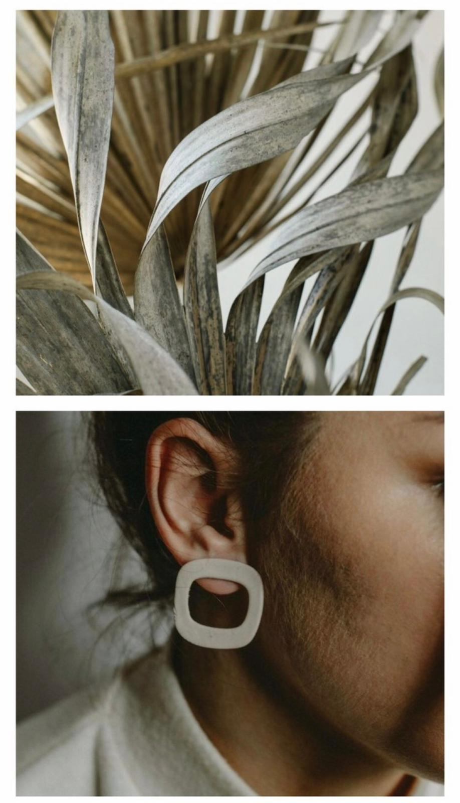

Magnolia nakit je mali brend osnovan 2018. godine sa jednom željom - da svaka dama pronadje autentičan i prema njoj skrojen model nakita. Svakim novim oblikom, bojom i unikatnim dizajnom nastojimo da ostanemo jedinstveni i svoji, baš kao i naše mušterije. U svaki komad nakita je uložen trud, rad i, pre svega, mašta, koju, nadamo se, vidite na svakom detalju koji je pažljivo osmišljen i sproveden u delo. Počevši od 2 modela mindjuša, Magnolia kao brend se može ponositi sa bezbroj modela mindjuša, kao i ogrlica. Dame, mi smo tu da svaku vašu zamisao sprovedemo u delo!
Priroda je neiscrpan vid inspiracije i jedna od najprisutnijih kad je Magnolia nakit u pitanju. Sve što je naizgled nesavršeno, neizbrušeno i netaknuto…. More, pesak, livade, nebo, kiša, sunce.
Ideje za oblike pronalazimo u nepravilnom obliku kamenja i stena, zemljanim kućama, grnčarijom, osobama koje su nam uzor, tkaninama, lepršavim haljinama, oknima, biljkama. Da bi se sve to sjedinilo, potrebni su mašta i ljubav, bez čega je nemoguće raditi i uspeti u nečemu.
Svi naši modeli napravljeni su od polimerne gline raznih boja...
Koja se potom oblikuje, meša i zagreva da bi se dobio finalni proizvod...
Polimerna glina samo naizgled deluje krhko i ne baš dugotrajno...
Ali se posebnom tehnikom modelovanja i zagrevanja postiže ta dugotrajnost i večni sjaj.
Ogrlice inspirisane poznatom umetnicom i velikom uzorom - Fridom Kahlo. Svaka perlica ručno izradjena i upotpunjena kožnom kopčom koja odiše elegancijom i podseća na rustičnost. Boje ogrlica se mogu zapaziti na Fridinim umetničkim delima, kao i zemljani tonovi koji su zaštitnički znak ovog brenda.
Moderniji dizajn kog odlikuju nepravilni oblici i neutralne boje. Za sve dame koje vole neupadljivost, a ipak ženstveni aksesoar koji će upotpuniti svaku kombinaciju. Ovo je kolekcija inspirisana spokojnim predelima, peščanim plažama, vetrom i prozirnim tkaninama.
Nešto drugačije od Magnolia brenda, potpuno nova krajnost i perspektiva- Nomadic kolekcija. Inspiracija za ove mindjuše bili su magla, vetar, ugalj i dim. Za dame koje vole tamne nijanse, sigurne u sebe. Neobični oblici, smeli dizajn i tamne boje krase ovu kolekciju koja je pažljive ručne izrade.
Jedna od prvih kolekcija inspirisana, kao što sam naziv kaže, kamenjem i stenama. Kružni i ovalni oblici prošarani nepravilim linijama podsećaju na pustinje, zemljane kuće i grnčariju. Mindjuše krase zemljani tonovi kao što su braon, narandžasta i oker boja. Kolekcija se može opisati jednom rečju - rustičnost.